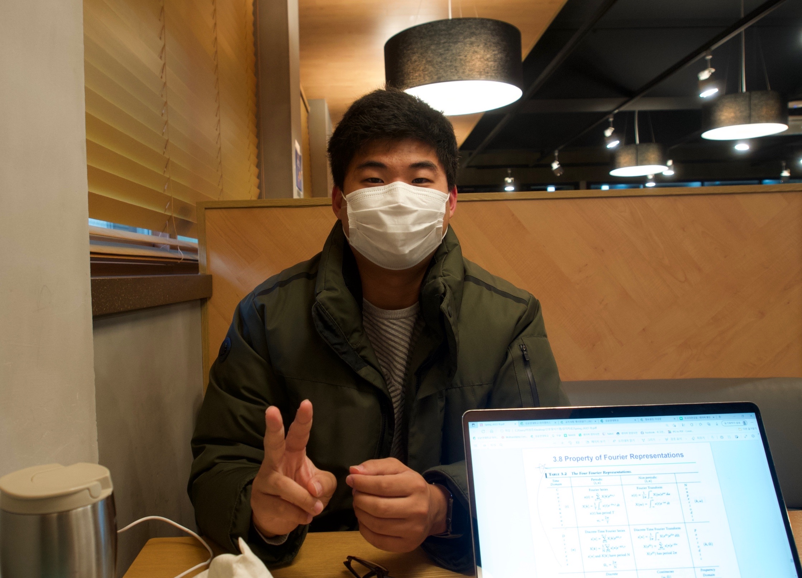
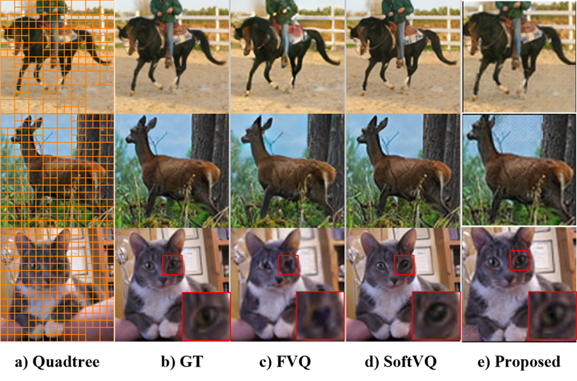
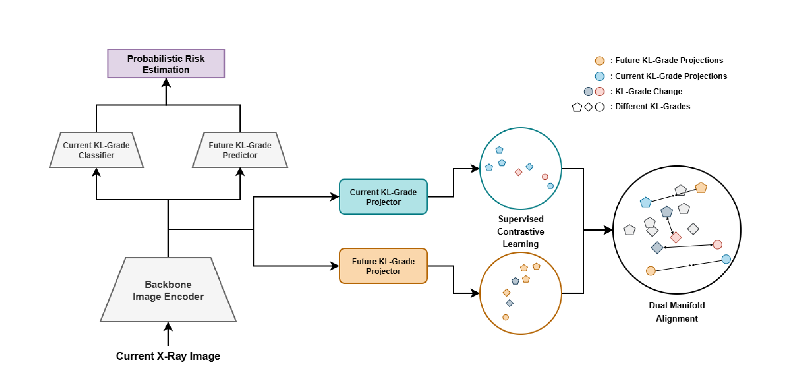
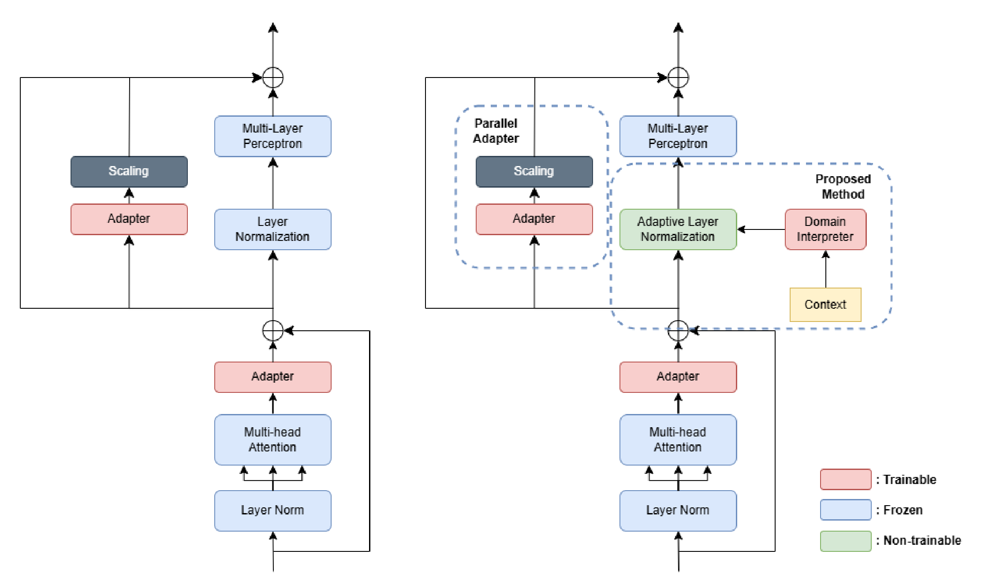
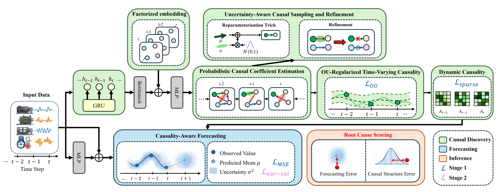
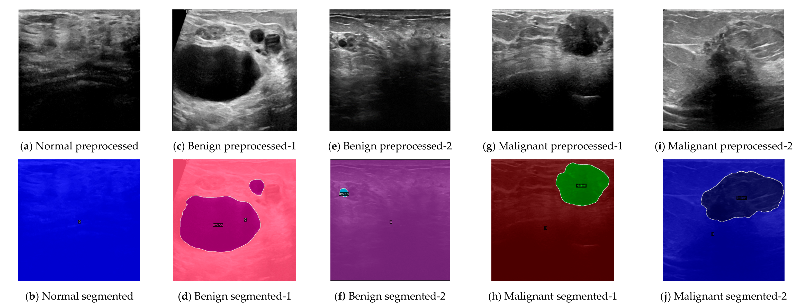
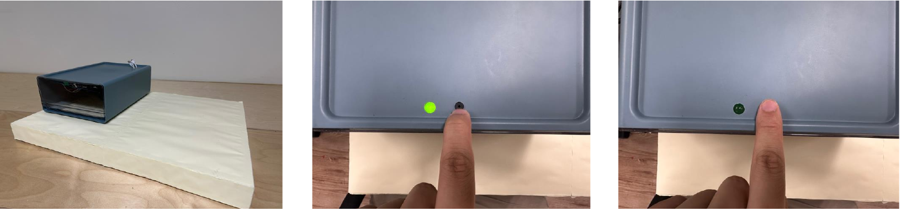
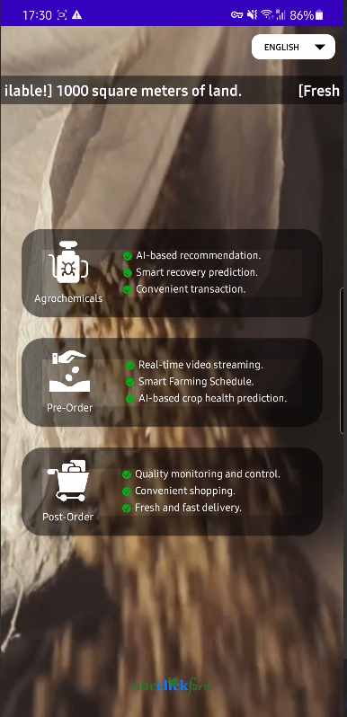
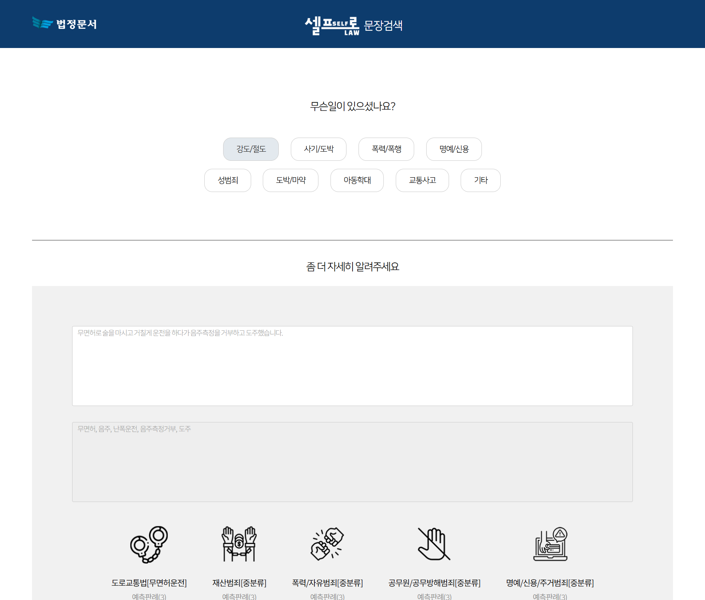

Generative models
Diffusion models and learned visual representations.
Master’s research · Sungkyunkwan University
Computer Vision and AI Researcher
MS Electrical and Computer Engineering · SKKU
Researcher focusing in domain-specific tasks, mainly in Medical AI, for more studies that have real-world applicability without increasing hardware requirement costs.

Diffusion models and learned visual representations.
Model adaptation, segmentation, and contrastive learning.
Image to image translation and image forecasting for radiological applications.
Patterns and data analysis between different timepoints.
I'm Seung Ho Jung. My master's research at Sungkyunkwan University's ECE department and Media System Laboratory (MSL) focuses on generative models, computer vision, and medical image analysis.
With 4 published papers, 1 accepted paper and 1 paper in progress, my work spans from medical vision models and representation learning to industrial applications. My background in software development supports the implementation of research ideas.
I also have more than 4 years of development experience, which includes several web development and architectural design of machine learning systems related with NNS.
Research on Generative Models and Computer Vision at Sungkyunkwan University. Part of this work is conducted as an outsourced researcher for Crescom, focusing on practical applications of diffusion models and image analysis.
Frontend and backend web development for Waterbe's advertisement tracking. Contributed across the full stack.
12 months of research experience within the university lab.
Multiple development projects: NLP natural language classifier (2021), Arduino-based water control system (2023), KNN pest & disease classifier (2023), Node.js/Express website (2023–2024).
Taught C++, Java, and Python fundamentals to students.
4 published · 1 accepted · 1 in progress
Spend fewer image tokens on simple backgrounds, then restore a dense grid for reconstruction.
STL-10 benchmark: 36.21 vs. 43.88 GFLOPS; PSNR 29.60 vs. 34.03 dB for dense ViT-B (Table 1, p. 8).
Trade-off: less computation, but lower reconstruction quality than the dense baseline and visible artifacts in some skipped regions.

Predict four-year knee osteoarthritis progression without assuming every patient follows the same path.
OAI cohort of 4,796 image pairs with Site D held out for validation/test. Compared baseline AUC: 0.7289 (Table I, p. 4).
The input is a baseline radiograph; future grades provide training supervision. Results describe the reported OAI evaluation.

Use image-level domain context to adapt SAM normalization for medical segmentation.
Noisy OAI ablation: Dice rises from 62.54% to 66.33%; IoU from 51.04% to 53.61% (Table II, p. 5).
This comparison isolates AdaLN and the domain interpreter. The separate denoised experiment reports different scores.

Trace anomalous sensor readings back to likely causes while accounting for changing, uncertain relationships.
Mean AC@K on industrial benchmarks: MSDS AC@1 = 0.827 +/- 0.102; SWaT AC@3 = 0.517 +/- 0.037 (Table 3, p. 12).
AC@K measures recovery of root-cause variables among the top K candidates. The model does not lead every metric; RCG has higher SWaT AC@1.

Locate breast lesions and assign their class within one ultrasound-image model.
Breast Ultrasound Image Dataset; reported 80/10/10 train/test/validation split. Results from Tables 4 and 5, pp. 12 and 14.
Illustrated cases include small, multiple and low-contrast lesions. The model predicts masks and normal, benign or malignant labels in a single framework.

A wirelessly powered Raspberry Pi scanner that turns paper text into digital text and sends it to a computer.

A full-stack advertising dashboard for tracking campaigns, influencer activity, channel performance, and monthly client reports at Waterbe.
Image classification for agricultural pests and plant diseases, developed for NNS within a broader crop-diagnosis and pesticide recommendation project.

A Korean NLP prototype for NNS that maps natural-language incident descriptions to major crime categories and specific offense labels.

An automated water control system developed for NNS Company.
Interested in discussing research, collaboration, or opportunities in machine learning and medical image analysis.